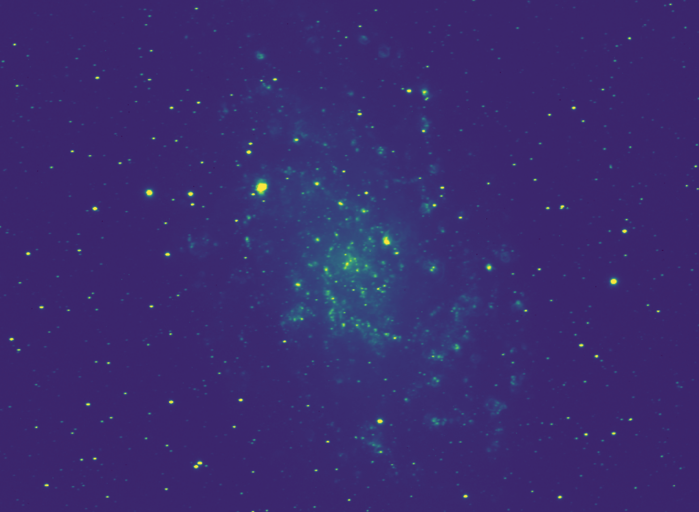
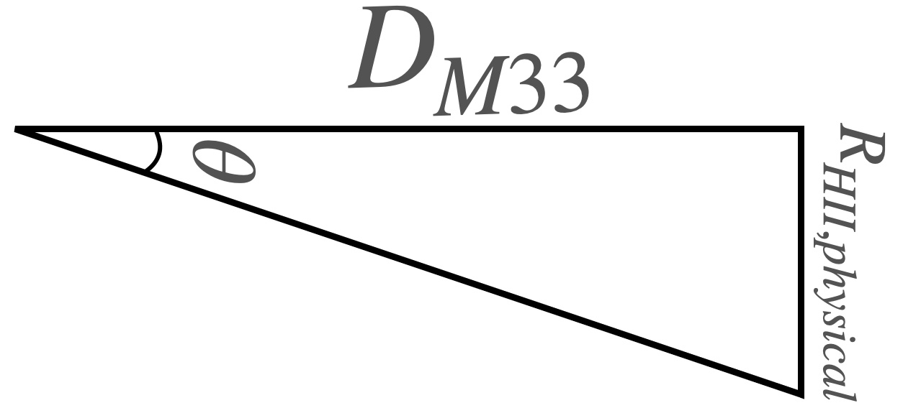

The Sizes of HII Regions#
Learning Objectives
Write basic functions in Python.
Be able to appropriately scale and view
FITSimages.Write functions to carry out analyses on images.
Introduction#
Stars form of many different masses (from much smaller than the sun to much larger), with many more low mass stars forming than massive stars. While very few high mass (e.g., 3-10+ \(M_{\odot}\)) stars form at a time in a galaxy, they have an outsized effect, dominating the light of the low mass stars (though they live much shorter lives). They are also the only stars (dubbed O-type) who put out significant light in the ultraviolet part of the spectrum. We know that our own sun does emit some light in the UV (that’s the more high energy, dangerous light that can give us cancer, hence sunscreen), but these stars pump out most of their light in the UV.
UV light has enough energy to ionize the atoms in gas (especially hydrogen gas), which means to knock the bound electron out of the atom and leave behind a proton and an electron. In some equilibrium, these electrons recombine with protons, and the electrons cascade through several energy levels as they fall toward the ground (most bound) state. For each gap they drop, the atom emits a photon with an equivalent energy to the difference between the levels traversed.
This process of recombination produces light at specific wavelengths, so when you look at planetary nebulae, star forming regions, or supernova remnanta (see below), the colors are representitive of the different elements and energy levels being traversed.
The Eagle Nebule, where we can see the hollow region being blown out by young stars (with the famous pillars of creation remaining), soon to be whittled down. Credit: ESO
Bright, young stars actually put out enough radiation to “blow out” and push on the gas remaining from the clouds from which they formed. This carves our roughly spherical regions known as Strömgen spheres, the inner boundary of which is usually lit up in this ionized emission. The size of the sphere blown out depends on the total amount of flux coming from the bright stars, which in turn depends on how many of them there are.
In this exercise, we will be using an image of M33 taken by the Dragonfly Spectral Line Mapper.
You can download it here (right click and save as a .fits file).
If you open it up in DS9, or in Python with the right settings, you should see something like the following:

In our image of M33, we can see lots of these roughly spherical regions being highlighted by the narrow, H\(\alpha\) filter being used to observe the galaxy. By measuring their size in pixels and using our knowledge of the distance to M33, we can perform some simple trigonometry to determine their actual physical sizes. As a bonus, we can then roughly estimate the number of O-type stars responsible for the visible HII region. (note that Starforming region and HII region are roughly synonymous; HII is the chemical name for ionized hydrogen).
Finding a Region#
While we can see by eye lots of small HII regions scattered around M33 in our image, to do a more careful analysis of the sizes we will need a way to crop our images to just focus on one HII region at a time.
There are fundamentally two ways to carry out this crop. We can work in units of image pixels, and use array indexing and slicing to select subarrays containing out HII regions. Or, we could use our wcs objects to pick central coordinates on the sky and a size (in sky angular units) to crop in on, and use an astropy tool to do the crop.
In this exercise, we will work with the pixels, as it will be good practice for our array indexing and slicing.
Exercise 1
Our first step is actually determining the pixel coordinates of a given HII region. While there are more complex methods we could write, it is not so hard to do this by eye. That said, a simple crosshairs function would help us know that our chosen coordinates land right on an HII region.
Write a function
crosshairswhich takes incrosshairs(ax,x,y). It should then useax.axvline(x)and similarlyax.axhline(y)foryto plot a crosshairs over our image at some coordinates. Returnaxwhen done.Run you function for position (995,1445). Are you right on an HII region?
Now that we have a set of starting coordinates, we want to crop our image down to a certain window around our coordinates which contain the HII region.
Exercise 2
Write a function
crop_imagewhich takes in the image array, (x,y) central coordinates, and a window size in pixels. Your function should compute the half-window size (integer division of input window by 2), then index the image from the central coordinates +/- the half-window size. It should return the new image.Use your
implotfunction to show a new image output by yourcrop_imagefunction using the above coordinates and a window size of 50 pixels.
Hint: Remember that arrays are indexed by row first, then column! This means in our bracket indexing, “y-value” indexing comes first, then “x-value” indexing.
You should hopefully now have a nice, circular feature filling most of your plotted image. This is our HII region!
In order to estimate its radius in pixels, we’d like to place a circle down that lines up with the ridge of emission defining the circle (and adjust our center as needed, as our by-eye estimate from the full image was likely not perfect.
Exercise 3
Recall that we can compute the x and y values of a circle with position \((x_0,y_0)\) and radius \(R\) via \(x(\theta) = x_0 + R\cos(\theta)\) and \(y(\theta) = y_0 + R\sin(\theta)\). Write a function
add_circle(ax,x,y,r)which takes in our imageax, creates an array ofthetavalues from 0 to \(2\pi\) (Hint:np.linspace()is good for this), computes the arrays for the x and y positions of the circle based on its center and radius, plots them usingax.plot(x,y)over the image, and returns the ax.Use your function to determine the new center and radius \(R\) of this HII region.
Warning
When you crop from the full image to the zoom image, you have a new array with a new shape. Our original coordinates no longer matter; your \(x,y\) center is the center of the new array, which should have a shape of 50x50.
So starting with a center of 25,25 makes sense here. If you want to know what these coordinates refer to back in the original image, you’ll have to do a coordinate transformation to “uncrop” them — calculate the coordinates of the left and bottom edge of the crop region and add the new center in \(x,y\) to those.
We don’t need to do that here, as we’re interested in \(R\) (which is preserved in the crop as the pixel scale has not changed), but not the precise \(x\) or \(y\) in original image coordinates.
Size Trigonometry#
Now that we have a measurement of \(R_{HII}\) in pixels, we need to begin converting this to a physical scale. We can do this because we know the pixel scale of our detector, that is, how many angular degrees (here we’ll use the arcsecond) on sky does one pixel subtend. For example, if we have a pixel scale of 2.2, that means each pixel subtends 2.2 arcseconds on sky (roughly 0.0006 degrees).
We can then make a triangle — the long edge is the distance in physical units to M33. The short edge is the length we want, the physical radius of the HII region, and \(\theta\) is our measured angular radius, obtained by multiplying the radius in pixels by the pixel scale.

Exercise 4
To perform the actual trigonometric step, we need to compute \(D\tan(\theta)\).
Write a function
compute_size(distance,s_pix,pixel_scale). Using the pixel scale, it should convert the sizes_pixto arcseconds, then onward to degrees (there are 3600 arcseconds in a degree), then onward to radians for the trig function (np.deg2rad()may be useful here). Then, using that, compute the size using the formula above and return it. The size output will have units equal to the length units that were assumed for \(D\).M33 has a distance of 0.869 Mpc (Megaparsec). Using your function, compute the radius of the HII region in parsec by converting the M33 distance to pc, then using your compute size function. Assume a pixel scale of 2.2. How big is this HII region?
Exercise 5
We can avoid the annoyance of unit conversions by using the astropy.units library. Look up how to create astropy unit quantities, and rewrite your compute_size function to allow distance to be input in any unit, as well as the pixel scale. Then easily convert your output to pc at the end and return it.
Number of OB Stars#
Now that we know the physical size of the HII region (not a trivial feat!) we can actually go further. In a back-of-the-envelope sense, the radius of the full HII region can be approximated as that of a Strömgren sphere around a “single” high energy star.
The formula for this radius is
where \(N^*\) is the ionizing photon rate from the OB star (typically \(\sim 10^{49}\) photon s\(^{-1}\)), \(\alpha \sim 3\times10^{-13}\) cm\(^{3}\) s\(^{-1}\) is the recombination coefficient, and \(n\sim 10\) cm\(^{-3}\) is the number density.
We know \(r_S\).
Exercise 6
Solve the Strömgen sphere equation instead for \(N^*\), writing a function that returns the value of
Having done so, you now have a function that, given a radius and assumptions about particle density and recombination coefficient, returns the “number” of OB stars driving the HII region! Technically, we have an answer that is units of the typical OB star’s photon flux, so the actual number of stars could be lower if each is more massive and brighter and vice versa — but this gives both the actual driving flux and an approximate order-of-magnitude estimate for the number of stars.
Play with your function a bit, putting in values from 10 pc to 500 pc for the size, and see how the ionizing flux changes!
Throughout the course of this lab, you have written several shorter (and longer) functions. For our implot function, it is hopefully clear why having that function around is handy — to set everything we included every time we wanted to quickly view some fits file or local array would be onerous; this function now makes it very easy to get a useful result in a simple one line call, with plenty of room to specify options if we desire.
On the other hand, functions are most useful for reusable bits of code. Thus far, though, we only measured one HII region. In theory, all of the computations we did along the way could have been done directly in our script or notebook and it would not have been that disorganized of a file.
Let’s now demonstrate why writing functions was useful, even for the small steps.
Exercise 7
Using the original image, pick four more HII regions in the image of M33, and determine their physical sizes and number of OB stars.
Tasked with this, hopefully you will be able to re-use your defined functions to make locating and measuring the size of each much easier! Create section headings in your solution with each one. While the solution won’t be fully automatic, since we still have some by-eye assesment happening, the final code block for doing this whole measurement will only be a few lines long, calling our pre-made functions.